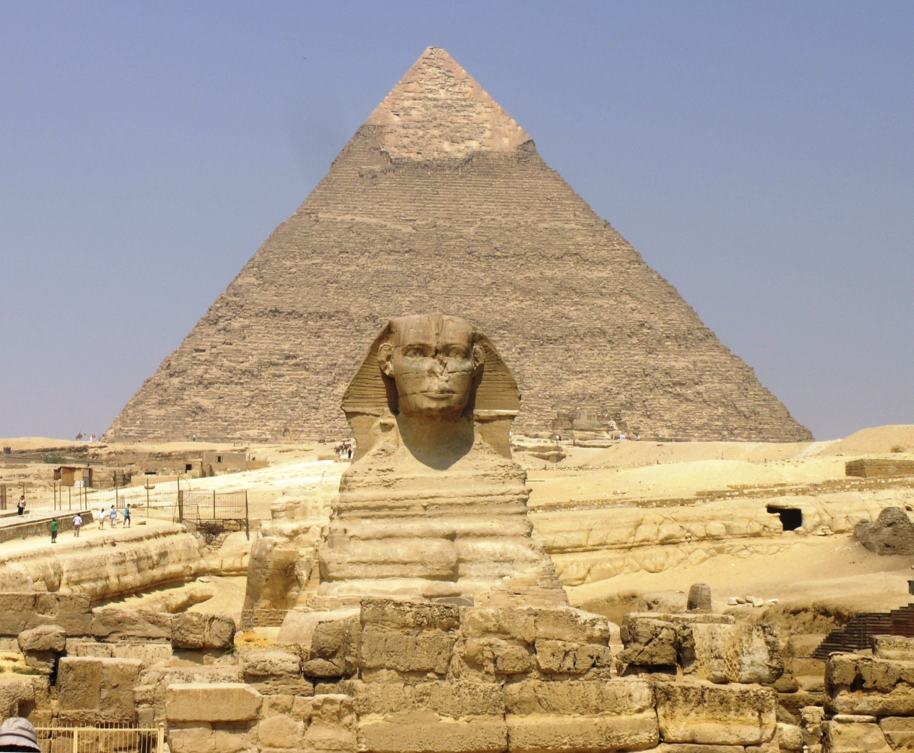

Egypt is key of life
Egypt is a country of successive civilizations, and it has the longest history, extending from more than seven thousand years BC to today. Throughout this long history, Egypt has come to possess a cultural depth and a great and unique historical legacy of its kind, and it has great archaeological facilities,Its central and distinct location between the continents of Africa, Asia, and the continent of Europe made it a distinguished cradle for the establishment of any civilization, and thus the oldest civilizations in human history were established there, namely the Pharaonic civilization and other civilizations that succeeded it.
Egypt includes many distinctive monuments, for which a few lines are not enough to describe their splendor. It is like an open museum of archaeological sites, and the most important of them is the Pyramids of Giza, which stand tall, defying time, days, circumstances, and the vicissitudes of life. It is not surprising at all that they are considered one of the seven wonders of the ancient world, and the pyramids are distinguished by With a unique architecture that made it the most important tourist attraction in Egypt, as for the Sphinx, which bears the head of a human and the body of a lion to indicate strength and wisdom, it is like a guardian of the pyramids, standing near them with its magnitude and mystery to sum up a deep history that Egypt went through and is still a witness to the events to this day. This is why Egypt is known as the birthplace of nobility and beauty, and a country that has carried the banner of excellence and nobility since the dawn of history.
Egypt has one of the seven wonders of the world:
The Great Pyramid of Giza.

Pyramid of Khufu (2575–2566)BC
The Pyramid of Khufu is the largest of the three pyramids in Giza, and known as the Great Pyramid. It is truly an amazing work of engineering.
The Great Pyramid was built over twenty years. Some believe that it was built by slaves, but this belief is not true. Many workers, numbering about one hundred thousand people, worked to build the Great Pyramid during three months of each year, during the annual flood of the Nile River, as during this period everyone becomes unemployed and cannot engage in agriculture or perform any other tasks, so They were taking advantage of the flood and starting to use the time to build. During the period of work, Pharaoh provides food and good clothing to the workers.
The construction of the Pyramid of Khufu depends on several basic points, including the length of each side at the base of about 755 feet (230.4 meters). The pyramid was built to contain about 2,300,000 blocks of limestone, with the average weight of the chamber reaching 2.5 tons, while the weight of some blocks reached 16 tons. This pyramid is still alive, despite the passage of several centuries, knowing that it is covered with limestone.